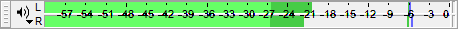

Meter Toolbars
From Audacity Manual
Contents
- Recording and Playback Meters
- Dropdown Menu
- What the bars and lines mean
- Meter channels
- Adjusting and monitoring recording level
- Adjusting playback level
- Resizing and Undocking
- Choice of meter style
The meters
Click on the toolbar images below to see these toolbars displayed in context of the default upper tooldock layout.
Recording Meter Toolbar inactive
Audacity always launches with input monitoring off and so the Recording Meter Toolbar displays "Click to Start Monitoring". Click in the recording meter to start monitoring, or when you press the  Record button the meter will activate. The Recording Meter Toolbar again displays "Click to Start Monitoring") whenever you stop a recording or start playback.
Record button the meter will activate. The Recording Meter Toolbar again displays "Click to Start Monitoring") whenever you stop a recording or start playback.
Recording Meter Toolbar in use
The bars remain green until the signal reaches -12 dB then merge to yellow as the signal approaches -6 dB (which is a good maximum signal level to aim for). If the signal exceeds -6 dB the bars merge from yellow to red. The red color warns that the signal is becoming too "hot" (approaching 0 dB) and that clipping may occur.
Playback Meter Toolbar in use
The Playback Meter will activate when you start playback, or if you start Recording with Software Playthrough turned on in the Transport menu.
The red color displayed here in the left channel warns that the signal was too "hot" or becoming too "hot" (approaching 0 dB). The red bar at the right of both channels indicates that clipping has occurred while playing.
Dropdown Menu
The dropdown menu on either meter (shown by the downwards-pointing triangle) lets you open the Meter Preferences specific to that meter. The dropdown menu on the Recording Meter additionally lets you enable or disable monitoring of the recording level without the need to record a track. Another way to access the menu is by right-clicking anywhere in the meter.
Monitoring
- Start Monitoring/Stop Monitoring (Recording Meter only): Starts/stops visual monitoring of the recording level without recording a track. If you want to also hear the input without recording it, turn on or enable direct hardware playthrough as described below. You can also start and stop monitoring by left-clicking anywhere over the Recording Meter.
Preferences
Selecting Preferences from the menu opens the Meter Preferences dialog which lets you change that meter's style, visual orientation, the scale format and more:
- Refresh Rate: Use this to set the refresh rate for this meter. A higher rate makes the meter show more frequent changes. Too high a rate can cause audio breakup on slower machines.
- Meter Style: You can choose either the Gradient Meter (default) or the RMS Meter.
- Meter Type:
- dB: Displays the meter with a logarithmic scale where the maximum level before clipping is 0 dB. This is the default view giving more detail for fainter sounds, corresponding more closely to how sound is heard. The minimum value of the scale can be changed in the Interface Preferences.
- Linear: Displays the meter with a linear scale where the maximum level before clipping is 1.0.
- Orientation:
- Automatic: Displays the meter in either horizontal or vertical orientation, depending upon the aspect ratio of the meter.
- Horizontal: Displays the meter at its default horizontal orientation, with the bars extending from left to right.
- Vertical: Displays the meter vertically, with the bars extending from bottom to top.
What the bars and lines mean
The image above is of the default Gradient Meter style. Please see RMS Meters for the visual metering differences that apply to that style.
Explanation of abbreviations in the image
- CP: Current Peak Level. The right-hand edge of the of the colored meter bars. This shows the current peak level of the audio in each channel and relates directly to the dark blue shading in the waveform.
- RP: Recent Peak Level. This colored bar indicates the highest peak level attained in the last few seconds in that channel. The actual color shown depends on the Current Peak level coloring at that time. These bars disappear after playback, recording or monitoring is stopped. You can also left-click inside the meter bars while they are active to manually reset the Recent Peak bars for that meter.
- MP: Maximum Peak Level. The blue bar indicates the maximum peak level attained in that channel during the current playback or recording session. These bars remain visible after playback, recording or monitoring is stopped, and are reset when a new playback, recording or monitoring session is started. You can also left-click inside the meter bars while they are active to manually reset the Maximum Peak bars for that meter.
- Clip: Clipping warning. The red bar to right of the maximum value of the scale appears as soon as there are four or more consecutive samples in that channel of audio exceeding that maximum. Once they have appeared, the clipping bars remain visible throughout that playback or recording/monitoring session. They are thus not an indication of current clipping, but an absolute indication that clipping occurred somewhere in the track. The clipping bars remain visible after playback, recording or monitoring is stopped, and are reset when a new playback, recording or monitoring session is started. You can also left-click inside the meter bars while they are active to manually reset the Clipping bars for that meter.
Meter channels
- When playing a mono track, Audacity sends the output to both left and right speakers. Therefore if you leave the pan slider on the Track Panel untouched, both channels of the playback meter will show an identical level. If you pan towards one channel, then the opposite channel will have its level reduced until a complete pan away from it will remove it.
- If you set Audacity to record in mono (for example, from a microphone), only the left channel recording meter will be active.
Adjusting and monitoring recording level
Having chosen the correct recording device in Device Toolbar, use the recording volume slider on Mixer Toolbar to adjust the level of audio being recorded. In the image above, note that the blue lines in the recording meter (indicating the maximum peak level attained) are at about -6 dB. This is a sensible level to aim for when recording, because it gives you headroom to make edits affecting volume afterwards.
Note that in some cases the recording volume slider may not be visible, as described on the Mixer Toolbar page. In that case you will need to use your soundcard's or operating system's recording/input volume control to set the recording level in Audacity.
Monitoring
It is good practice to test the correct recording level before recording for real. Monitoring lets you do this without actually having to record and then delete a test track. It also verifies that you are recording the input source you expect. There are two ways to turn monitoring on and off:
- Left-click on the recording meter to turn monitoring on. Click again to turn it off.
- Click on the downward-pointing arrow beside the microphone symbol to display the meter dropdown menu. Choose "Start Monitoring" or "Stop Monitoring" as appropriate.
- on Windows or Linux, unmute the playback of your input source in the playback side of the system mixer. If this does not work, enable "software playthrough" in the Transport Menu
- on Mac OS X, enable "software playthrough" in the Transport Menu. If this does not work, try the free LineIn application.
Adjusting playback level
The playback level displayed in Meter Toolbar reflects the combined amplitude of all the tracks in your project, in other words, the level of the mix as determined by the gain sliders on each track.
The playback volume slider on Mixer Toolbar does not affect the playback meter - the purpose of the meter is solely to indicate what the loudness of the project audio would be were you to export it as an audio file.
Resizing and Undocking
Like all toolbars, either or both Meter Toolbars can be undocked, but unlike the other toolbars, they can also be resized. Resizing gives longer scales for the meters and hence a more accurate view of the volume levels.
- If a meter is docked, you can resize it horizontally by clicking and dragging the right edge.
- To undock a meter, click the handle on the left edge and drag. You can drag outside the Audacity project window, too.
- To resize when undocked, click on the resize handle that appears at the bottom right of the toolbar and drag horizontally or vertically. The meters display in vertical orientation when their toolbar height exceeds their width.
Choice of meter style
Audacity offers two choices of style for metering. You can switch between the two meter styles in the Meter Preferences dialog which is accessed by the Meter dropdown menu. For both styles, L shows the left channel and R the right channel.
Gradient Meter
This is the default meter style for Audacity. Both the Playback Meter (loudspeaker icon) and Recording Meter (microphone icon) display in the same colors. The bars remain green until the signal reaches -12 dB then merge to yellow as the signal approaches -6 dB (which is a good maximum signal level to aim for). If the signal exceeds -6 dB the bars merge from yellow to red. The red color warns that the signal is becoming too "hot" (approaching 0 dB) and that clipping may occur.
Full-height Meter
You may wish to use full-height meters (as were used in earlier versions of Audacity). If so, you can undock the meter by dragging the serrated edge on the left, then drag the meter downwards (at bottom right) until it's the full height. That will make the numbers appear under the meter bars.
If you have space in the upper dock area you can then drag the standard height meter back into the upper dock.
RMS Meters
- 
The Recording Meter has red meter bars and a red Recent Peak indicator and the Playback Meter has green meter bars and a green Recent Peak indicator. This style displays the current RMS level of the signal in a lighter shade of red or green respectively, but the color of the meter bars does not change when when the signal approaches -6 dB or 0 dB. The right-hand edge of the lighter part of the bar show the current RMS level and the right-hand edge of the darker bar shows the Current Peak level.
Combined Meter Toolbar
It is also possible to work with the two meters combined into a single toolbar, as shown here, by selecting Combined Meter Toolbar from .